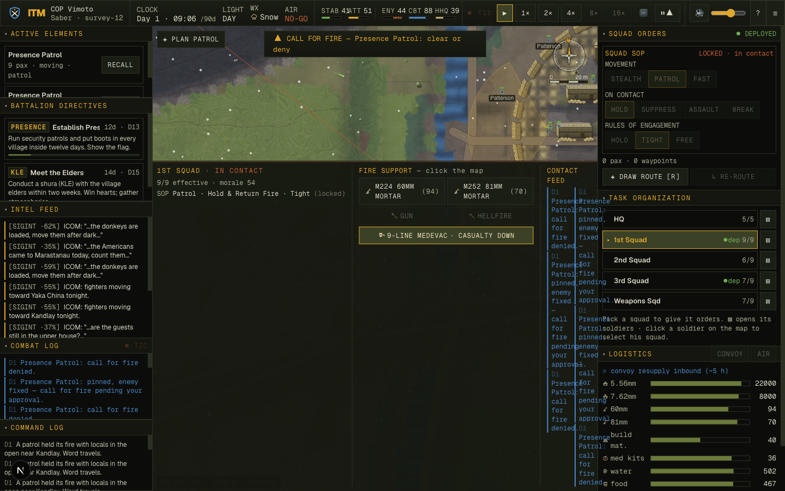
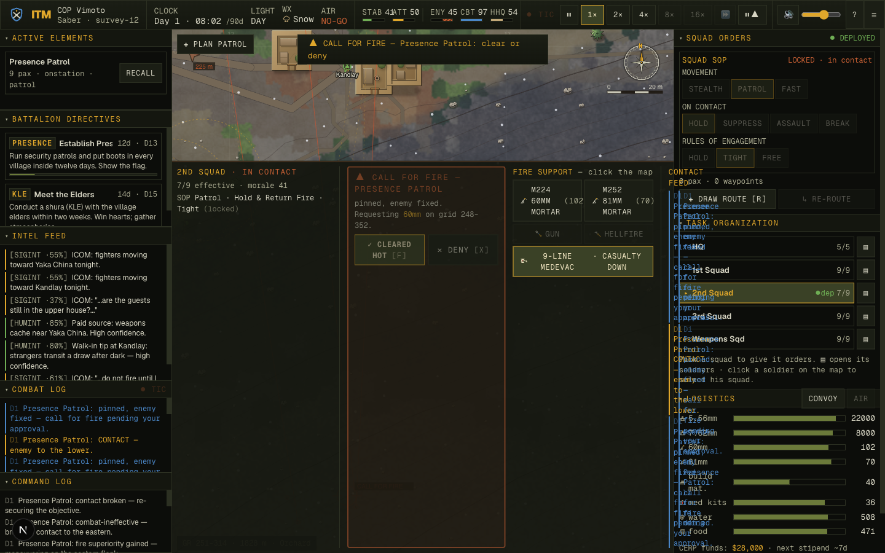
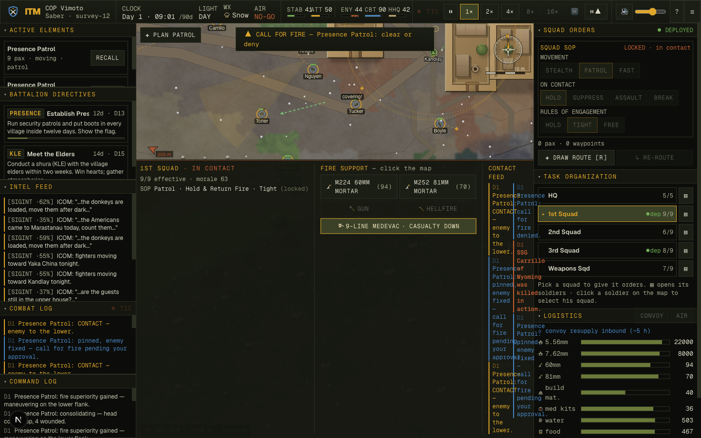
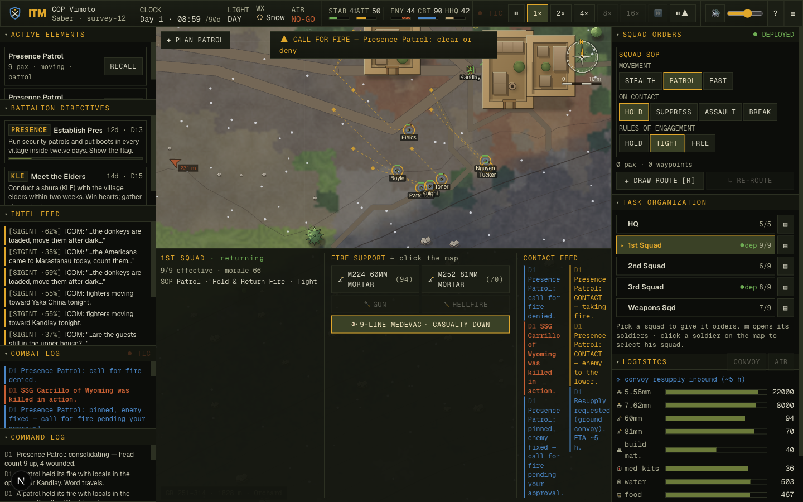
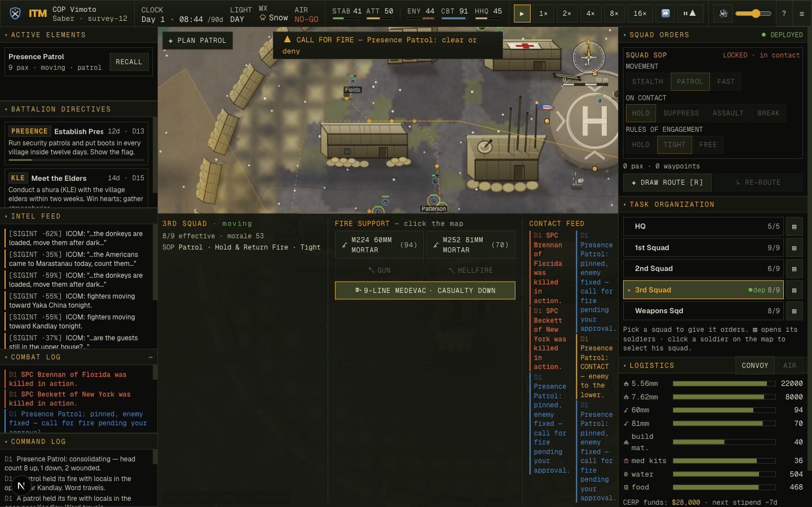
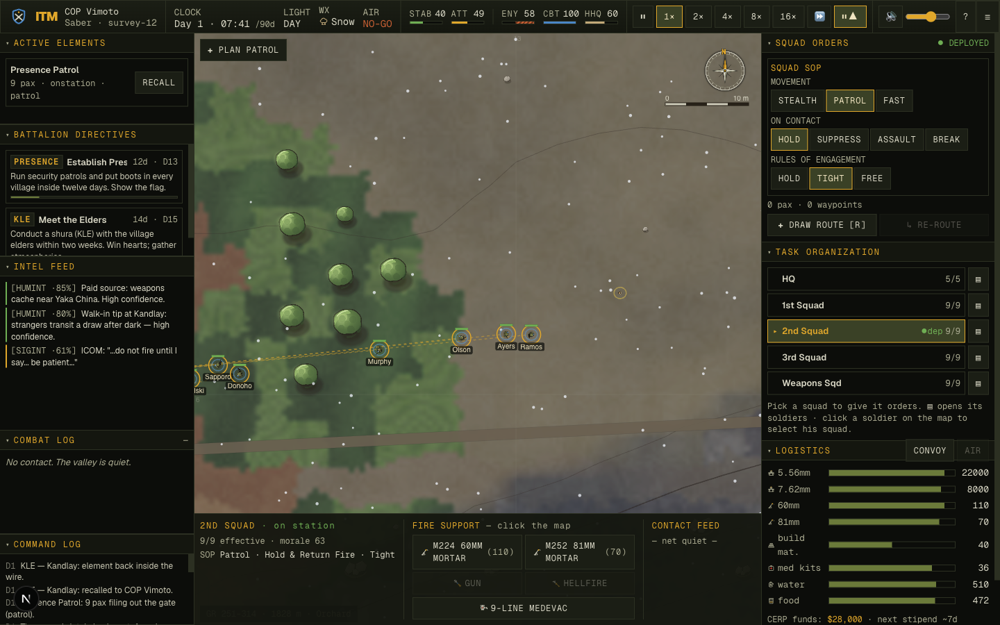

People Immersion · 2026-06-10 · Sim AI + Render + COIN
Making the people real
The owner wrote a standing brief — not a ticket, a dare: make every soldier, fighter, and villager move, behave, and interact so convincingly that a skeptical infantry veteran forgets he's watching a simulation. This campaign answers it with one architecture applied four times — group minds decide, individuals execute, everything is visible, and the valley remembers — and proves every piece with five new purpose-built probes, a live-app capture session, and a held-out seed set the work never tuned on.

survey-12, Day 1. A KLE used to be a modal text dialog. Now the radio carries "word goes to Asadullah Saifullah — the elders are coming out" (06:04), the elder physically walks out from his compound, and at 06:05 — +42 s of on-station, matching the headless probe's number — "Asadullah Saifullah sits down with SSG Toner — the shura begins." State-verified at capture: the elder's unit 4.1 m from the squad leader, task.elderMet === true, and the attitude drip, the elder's ask (bottom-left: "…asks that patrols stop kicking in doors…") and the decision modals all gated on the meeting actually happening.The recon that corrected the brief
The brief's map of the floor (§3) was honest but partly wrong — and the campaign's first move was six recon agents sweeping the actual code before anyone designed anything. Three of the brief's claims did not survive contact:
- "Civilians respawn each day, identical, learning nothing" — false. They never respawned; they had been persistent named individuals all along. The memory infrastructure the brief asked for already had its subjects.
- "No cell leader, no coordination" — half false. Enemy cells already existed (
squadId, casualty-shock contagion, leader succession) — what was missing was only the group decision layer on top. - "Men don't react individually to a near-miss" — false. The suppression field is real physics; rounds crack past and pin men near the trajectory.
The genuine gaps were three: no group minds (every fighter an independent turret, every drill a metronome), no scenes (the shura a pop-up, the elder a name that never appears), and nothing visible (cohesion and brotherhood asserted in the data, absent from the eye). Those three gaps shaped the whole campaign.
The spine — one sentence, one architecture. The friendly squad already worked the right way: squadFight decides (the squad leader's brain — react, hold, suppress, assault, break) and friendlyBrain executes (each man's per-tick behavior). The campaign never invented a second pattern — it extended that same decide/execute split to the enemy (a cell leader's brain in cell-combat.ts), to the village (civic scenes + a named grievance ledger), and added the missing presentation layer (a deterministic callout bus) so internal state becomes watchable behavior. One mechanism, four places.
Wave 1 — The enemy gets a brain sim · cell-combat.ts
Before: every fighter ran the same state machine alone — disciplined, but a row of independent turrets. Each man triggered his own ambush when his picture looked right, so a five-man trap opened raggedly over ten-plus seconds. After: every spawned cell gets a flagged leader, and cellFight makes the group decisions — the trap springs as one volley on the base gun's kill zone (FM 3-21.8's rule: the ambush is initiated by the most casualty-producing weapon — the per-man triggers defer to the leader), targets are distributed across the L from each man's own sight picture, fire-and-movement displaces by halves on the leader's clock, and a breaking cell peels to a shared rally, farthest man first, instead of scattering.
The proof is an A/B with a kill-switch: ITM_NOCELL=1 turns the coordinator off and re-runs the same seeds, so the delta is attributable to nothing else.
| Cell coordination (6 seeds × 25 min, A/B) | Coordinator OFF | Coordinator ON |
|---|---|---|
| Ambush volley spread, p50 | 0.1 s | 0.1 s |
| Ambush volley spread, p90 — the ragged tail | 11.2 s | 0.6 s |
| Breaking cell, mean dist to rally 30 s → 90 s | 40 → 61 m (rout disperses) | 54 → 34 m (peel converges) |
| Enemy rounds/min (gate ±15%) | baseline | −6.6% |
| Civilian melt tell (pre-contact vocabulary unchanged) | PASS | PASS — preserved by construction |
The convergence row is the one to teach: you cannot fake it with a screenshot. A coordinated peel shrinks its spread around the rally point between 30 and 90 seconds after the break; an uncoordinated rout grows it. The probe measures exactly that second derivative of group behavior — the same way you'd tell a withdrawal from a panic on a real hillside.
{kind=link}

sim.projectiles: 3 insurgent rounds + 1 live muzzle effect were in the state at this exact tick.{kind=link}

The drill stops being a metronome sim · squad-combat.ts + friendly.ts
The brief's complaint: two squads assaulting the same objective moved identically. A new probe (drill-timeline-probe.ts) fingerprinted the rigidity first — bound step-off spread was literally 0.00 s σ: every buddy pair stepped off on the same tick, every time. Three mechanisms loosened it without touching the load-bearing clocks:
- Nerve — a per-man scalar from static traits only (composure-max, experience, aggression, hash-jittered, zero-mean by construction) that drives bound step-off hesitation, pin-threshold jitter, and cover-acceptance taste. Step-off spread: 0.00 → 0.10 s σ; two same-SOP squads' first assault commits now drift 0.4 → 6.0 s apart on the same objective.
- Pinned-revert — an assault whose maneuver element is majority-pinned >4 s falls back to suppress, re-develops (12 s floor), and re-commits preferring the other flank. The "we're pinned, go to ground" beat the brief said didn't exist.
- The securing buddy — when the medic arrives at a casualty, the aid buddy becomes the third figure in the scene: he kneels 2.5 m off on the threat side facing out, because in TCCC the first treatment is security, not the bandage.
Honest residual, stated up front: at natural campaign tempo the probes recorded rvt 0 — the pinned-revert never actually fired in the measured windows. The mechanism exists, is unit-traceable, and is rare by construction (it needs a majority-pinned maneuver element to persist 4 s); a staged-scenario proof is queued in the deferred backlog (issue 026). It is reported as built-not-yet-witnessed, not as a win.
The brotherhood becomes audible sim + render · the callout bus
Cohesion existed as numbers; the eye saw none of it. The fix is a diegetic callout bus: the engine emits short shouts at the moments that matter — "contact front!", "man down!", "covering!"/"moving!" on bound swaps, "doc — over here", "on me" at succession, "head count!" at the consolidate — through a ring buffer on CombatSim with per-squad dedup windows. Phrase variety comes from string hashing, never from the sim's rng, so two same-seed runs produce fingerprint-identical callout streams: determinism is asserted, not hoped. A React-free presenter (lib/render/callouts.ts, cloned from the audio mapper's warp-safe high-water-walk pattern) draws at most 3 small plates above the figures at tactical zoom.
| Callout probe (5 seeds × 2 runs × 25 min) | Result |
|---|---|
| Two same-seed runs, full stream fingerprint | identical |
| Man-down coverage (witness-eligible casualties announced) | 100% — 80/80 |
| Dedup violations / spam | 0 · per-squad ≤ 8/min |
| Held-out seeds (hold-0..2) | 22/22 coverage, det OK, dup 0 |
{kind=link}

Wave 2 — The seams of march and fight sim · tasks.ts + formation.ts
The brief singled out the transitions — march → contact → lull → resume — as "where realism lives or dies." The design survey agreed so hard that three independent proposers invented consolidate & reorganize separately; that convergence was treated as evidence it was load-bearing, and the three inventions were merged into one mechanism at the contact→lull seam (Law 6: one robust mechanism, not a pile of patches).
After a real engagement ends on the march, the squad now does what FM 3-21.8 says a squad does: collapses into a kneeling security ring, the squad leader physically walks the line, ammo is cross-levelled to the automatic weapons (the ACE report's real consequence), casualties are carried to the ring, and the head count goes out on the net — 30–90 s keyed to casualties and suppression, preempted instantly by renewed contact.
{kind=link}

holding in the ring with the SL moving — the walk-the-line, in the data.{kind=link}

| Transition + texture gates | Result |
|---|---|
Consolidate follows eligible post-contact lulls (transitions-probe.ts) | 60/60 · resume 100% · stuck 0 |
| ACE ammo cross-level to auto weapons | fires when rifle>gun imbalance crosses threshold |
| Medic-scene third figure (aid buddy kneels facing OUT) | covered — after a dead-gate bug was caught, see below |
| March texture: point-man caution, per-man line meander, night/weather interval | paceEff 0.58 → 0.58 (unchanged) · blocked 0% · jitter 1°/s |
The movement texture is deliberately subtle: the point man eases pace into corridor chokes and holds one beat at the mouth; each man wanders his own hash-keyed ±fraction of a metre off the wake line so the file stops being beads on a string; rain and darkness close the interval. The gate that mattered was the non-regression: all of it ships with the cohesion suite's pace efficiency byte-for-byte at the baseline mean and zero blocked legs — texture that costs nothing.
Wave 3 — The village remembers sim · the elder, the ledger, the children
The brief called this "the hollow heart": the elder had a procedurally generated name but never appeared; a civilian death was an attitude penalty, not a person. Wave 3 makes the village's people first-class agents and its memory persistent state:
- The shura is staged, not displayed. Every village's elder is a guaranteed real unit (first villager spawned;
VillageState.eldercarries his actual name; succession repairs the binding when he dies). A KLE physically summons him: he walks out with dignity, sits down 2 m from the squad leader's ring slot — and only then (t.elderMet) do the attitude drip, the elder's ask, and the decision modals flow. A 15-minute no-show proceeds via "the elder sends his regrets" — the absence itself a read. Gunfire always wins: a staged threat aborts the summons, latched (verified — the elder turned home, then fled the actual firefight). - The blood debt has a name. Civilians belong to 2–4-person households. A civilian casualty of US fire writes a named grievance to the village ledger; at the next first light the household and the elder gather at the compound for twenty minutes and bury him — one log line, weight not spectacle. Unresolved entries floor effective sympathy (Pashtunwali's badal, capped); the dwell event becomes "The Blood Debt", by name; paying solatia settles the ledger by name. Grieving households clear the road from troops, always; their children never trail.
- The children are the meter. In a friendly village, curious kids trail a weapons-cold patrol at ~9 m standoff; in a hostile or grieving one they are simply not out near your men — the melt's quieter sibling, running on attitude. FM 3-24 and CALL's atmospherics handbooks treat children-near-patrols as the canonical positive indicator; here it is emergent, not scripted.
"Abdul Khan of Kandlay was killed by our fire. His household will remember."— the ledger entry, written by the engine at the moment of the casualty (lib/sim/world/world.ts · applyCivcasBacklash)
{kind=link}

Village-wave gates (encounter-probe.ts + suite) | Result |
|---|---|
| Elder departs ≤300 s · sits down | +42 s of on-station · 4.1 m from the SL (live match) |
No dwell event before elderMet · staged ambush aborts the summons | held · melt wins, latched |
| Funeral: household at the grave at first light · save/load mid-gathering | named entry · 3/3 kin resume the gathering |
| Kids trail-minutes, +40 vs −40 attitude (tuned / held-out) | 2.82 vs 0.07 · 9.59 vs 0.00 |
| Dwell bands untouched (KLE 1.63 h in 1.0–2.0) · diurnal + melt mechanism · civCas | verbatim PASS · PASS · 0 |
The probes did the real work — six bugs that never reached the player
This is the section a skeptic should read twice. The campaign built five new deterministic probes — cell-coordination A/B (with the ITM_NOCELL kill-switch), callout determinism/spam, drill-timeline fingerprints, transitions, and the encounter probe (shura/funeral/kids) — and they were not decoration: every one of them caught a real shipping bug before it shipped. A feature you can't measure is a feature you can't trust; here is what measurement bought, verbatim:
| # | The bug the probe caught | The number that told the story | The fix |
|---|---|---|---|
| 1 | The doc-shout metronome. "doc — over here" re-emitted every tick a casualty lay untreated — a spam wall, not a brotherhood. | 390 emissions in one run → 6 | Latched per casualty, not per tick. |
| 2 | The half-volley. The displace clock started at spawn and expired instantly — half the cell went scooting before their first shot, gutting the disciplined initiation the wave existed to build. | volleyP90 18 s — inverted, worse than no coordinator | Displace clock arms only after a man's first shot. |
| 3 | The quantized hesitation. The per-man step-off delay was gated behind a slow reconsider loop, which quantized it straight back to zero — the feature measured as not existing. | step-off spread 0.00 s σ again | Moved into the per-tick execution layer (friendlyBrain), re-measured: 0.10 s σ |
| 4 | The dead medic-scene gate. The securing-buddy logic checked a targetId field that no writer ever set — syntactically fine, semantically a gate that could never open. | scene coverage 0 / 1048 treat ticks | Re-keyed to the proximity-matched aiding state. |
| 5 | The meet-geometry bug. The elder sat down at the shura while the log said "sends his regrets" — the summons walked him to a meet point 9.2 m from the SL's actual ring slot, outside the 6 m met-gate. | 9.2 m vs a 6 m gate | Meet point anchored to the SL's real slot; live: 4.1 m |
| 6 | The medic who fired on his own patient. The first fix for #4 wrote targetId — and silently poisoned updateFiring's trust in that field: a weapons-free medic acquired his own casualty. Caught by a balance bisect, not a glance: KIA rose with the coordinator ON and OFF both, and the KIA-up/WIA-down signature (wounded men dying) pointed at the aid station. | KIA 3.75 / 3.00 (ON/OFF) → fixed → 1.25 | The targetId channel reverted; scene re-keyed without touching the firing path. |
Why this is the "did an AI really do this" material. None of these six would surface in a demo video. Three are inversions — the feature measuring as its own opposite (the half-volley, the quantized hesitation, the seated elder logged as absent) — which only a probe that asserts the real success condition can see. And #6 is the signature of a verification culture working end-to-end: a humanitarian detail (a kneeling buddy) introduced a combat-path regression two systems away, and the balance harness — not the feature's own probe — caught it, because every wave ends by re-running the whole gate suite. The fix for the bug was partially reverting the fix for the previous bug. That is what honest engineering looks like in the log.
Proven on seeds the work never tuned on law 3
Everything above was tuned on the survey-0..39 convention and dedicated probe seeds. The final proof ran on fresh, untouched inputs:
| Held-out check | Result | Baseline / gate |
|---|---|---|
balance.ts — 16 deployments × 50 min, hold-* seeds | KIA 0.94 · WIA 6.44 · enemy 4.38 · civCas 0 · 0 stranded | HEAD KIA 1.08 · WIA 8.58 — friendly KIA below baseline with a smarter enemy |
cohesion.ts — survey-40..45 | paceEff 0.57 · blocked 0% · jitter ≤2°/s | HEAD 0.58 — march texture costs nothing |
| Civilian melt — survey-44 / survey-45 | OK / OK (children melt first; 0 shots in window; det hash identical) | the gold-standard tell, untouched |
| Callout bus — hold-0..2, 2 runs each | 22/22 coverage · dup 0 · fingerprints identical | det + spam gates |
| Kids meter — held-out seed | 9.59 vs 0.00 trail-minutes | tuned-set 2.82 vs 0.07 — the signal grew off-tune |
The full residual list, unflattering figures first. (1) Pinned-revert never fired at natural tempo — rvt 0; mechanism built, staged-scenario proof queued. (2) US WIA runs below the baseline band (~6–7 vs 8.58) — the friendly side got safer (directional cover + a peeling enemy compound); not a player-facing harm, but a drift being watched, not celebrated. (3) The massed-volley spectacle screenshot was never captured live — three attempts failed on documented mechanics (0.12 s muzzle TTL vs ~2 s capture latency; 80–380 m stand-offs don't fit one tactical frame); the volley itself is headless-verified, and the failed technique is written down so the next session doesn't rediscover it. (4) The atmospherics closure %-gates flip on 1–2 of 5 seeds per build at cohort sizes n≈5–24 (one civilian = 5–13 pp) — the mechanism gates (children-first, pre-contact, determinism) never flip; an aggregate-mode harness improvement is queued rather than weakening the gate. (5) Same-build balance noise is ≈±0.4 KIA at n=12 — which is exactly why the held-out proof ran at n=16. Everything deferred lives in docs/issues/026-people-immersion-deferred-backlog.md.
Grounded where a veteran would check
- FM 3-21.8 — battle drills and consolidate & reorganize (the ring, the line walk, ACE, the head count); the ambush initiated by the most casualty-producing weapon (the cell's base gun opens, riflemen defer).
- TCCC — security is the first treatment: the aid buddy's job is the threat side, facing out, while the doc works.
- FM 3-24 + CALL atmospherics — children near a patrol as the canonical positive indicator; their absence as the warning. The melt (already shipped) and the kids meter (new) are the same grammar at two volumes.
- Pashtunwali — badal — the blood debt is named, persistent, heritable by the household, and settleable by solatia: exactly the ledger the engine now keeps.
- The lived texture — Junger's War and Restrepo: the shura's slow dignity, the head count after contact, the radio's flat grammar. Weight, not spectacle — the funeral is one log line on purpose.
How every claim was checked
| Claim | How it was proven | Number |
|---|---|---|
| The trap springs as one | cell-coordination-probe.ts A/B via ITM_NOCELL, 6 seeds × 25 min | p90 11.2 s → 0.6 s |
| A break is a peel, not a rout | same probe — rally-distance convergence 30→90 s | 40→61 m vs 54→34 m |
| Men hesitate like men | drill-timeline-probe.ts fingerprints, same-SOP twin squads | 0.00 σ / 0.4 s drift → 0.10 σ / 6.0 s |
| The brotherhood is audible & deterministic | callout-probe.ts — 2-run fingerprints, coverage, spam | identical · 80/80 · dup 0 |
| The squad consolidates and resumes | transitions-probe.ts | 60/60 · resume 100% · stuck 0 |
| The shura is real and gating | encounter-probe.ts shura + live capture, state-read | +42 s · 4.1 m · elderMet gate held |
| The valley remembers across save/load | mid-gathering serialize → loadWorld | 3/3 kin resume the funeral |
| Nothing the player had got worse | balance/cohesion/melt/dwell/autonomy + smoke/tsc/build, every wave; held-out tail at the end | KIA 0.94 vs 1.08 · civCas 0 · 0 stranded · dwell bands verbatim |
Engineering record: docs/progress/2026-06-10-people-immersion/ — the brief's recon-corrected CONTEXT, the synthesized plan with its adversarial-review amendments, verbatim HEAD baselines, per-wave evidence (after-w1/, after-w3/), the held-out corpus (holdout/), and the live-capture session with its staging disclosed line-by-line (after-w3/live/captions.md). Probes: scripts/cell-coordination-probe.ts, callout-probe.ts, drill-timeline-probe.ts, transitions-probe.ts, encounter-probe.ts. Touched: lib/sim/ai/cell-combat.ts (new — the enemy group mind), squad-combat.ts + friendly.ts (pinned-revert, nerve, the securing buddy), lib/sim/combat.ts (the callout bus), lib/render/callouts.ts (new — the presenter), lib/sim/world/tasks.ts (consolidate, the staged shura), formation.ts (march texture), create.ts (the elder, households), world.ts (funerals, succession repair, the reception push), civilian.ts (summons, kids), events.ts (The Blood Debt), director.ts (leader flagging). Brief: docs/briefs/movement-and-interaction-immersion.md. Deferred: docs/issues/026. Every number quoted as measured; the residuals are in the red box, not a footnote.